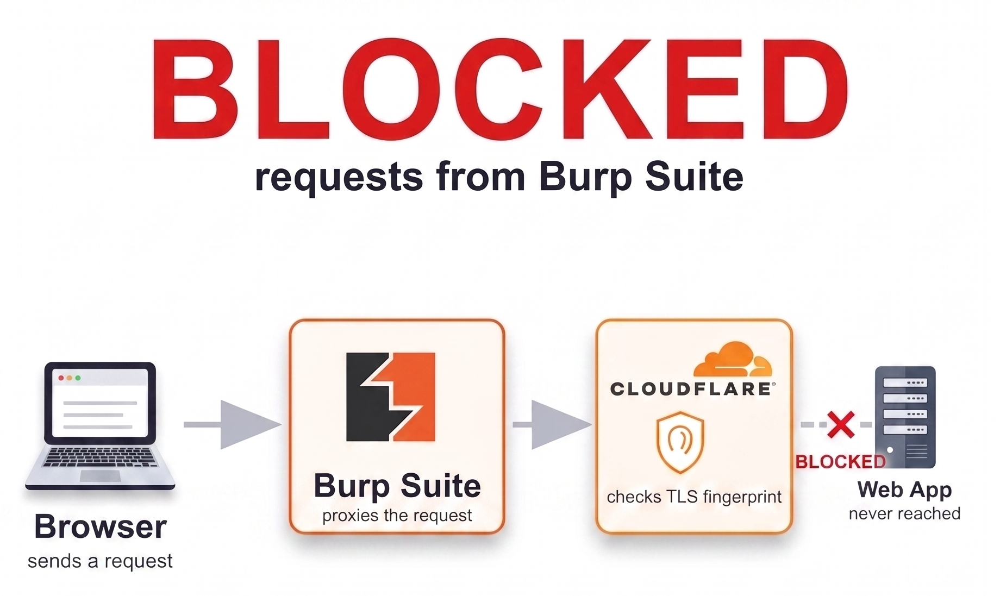
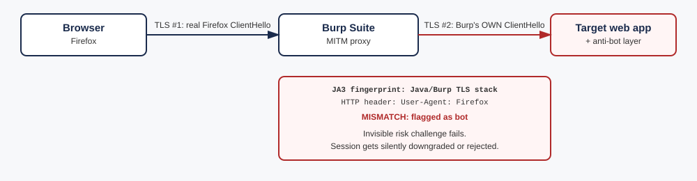
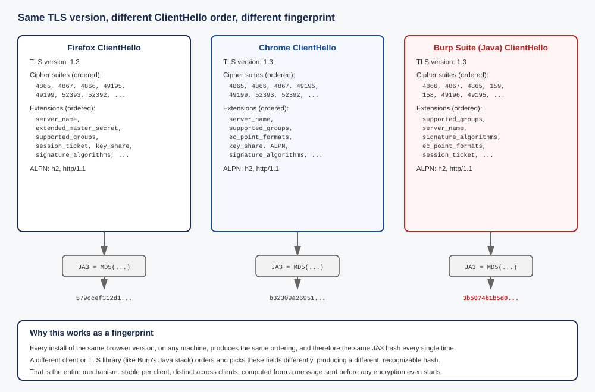
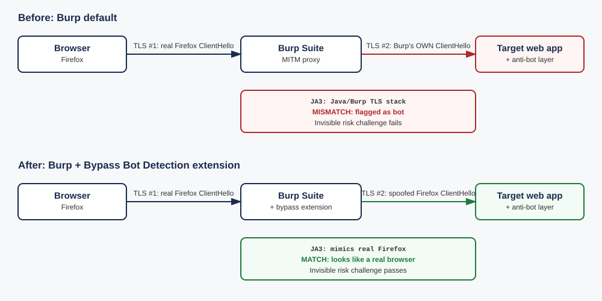
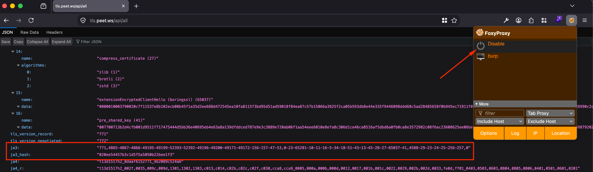
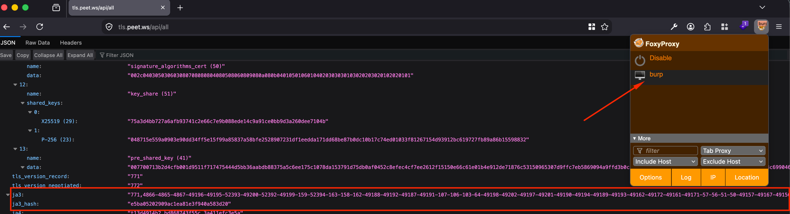
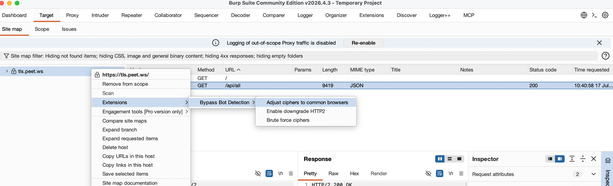
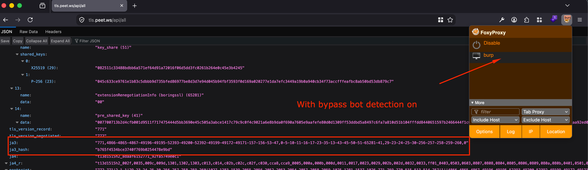

Modern bot detection doesn't just look at HTTP headers or behavior anymore. A lot of products now fingerprint the TLS handshake itself. That matters for anyone testing through Burp Suite, because Burp's proxying model means the traffic hitting the target server never actually has a browser's TLS fingerprint, regardless of what the User-Agent header claims. If a target's anti-bot layer checks for that mismatch, requests can get silently downgraded or rejected in ways that have nothing to do with the application itself, and they look, at first glance, exactly like a broken endpoint.
Two TLS connections, not one
It's easy to think of Burp as sitting transparently in the middle of a single connection. It doesn't. Burp is a MITM proxy running two independent TLS connections:
- Connection #1 (browser to Burp). Your real browser (Firefox, Chrome, whatever) does a real TLS handshake with Burp, believing it's talking directly to the target site.
- Connection #2 (Burp to the target server). Burp then opens its own, completely separate TLS connection to the actual server, using Burp's own TLS stack (Java's default
SSLContextby default).
The server only ever sees connection #2. And critically: the HTTP headers riding on top of it (including User-Agent: Firefox) are forwarded unchanged from your browser. So the server reads a request that says "I am Firefox" in its headers, carried over a TLS handshake that very obviously isn't Firefox's. That mismatch is the whole bug.

What a TLS fingerprint (JA3/JA4) actually is
The ClientHello (the very first message of a TLS handshake, sent before any encryption is established) contains, in a specific order:
- TLS version
- the list of supported cipher suites, in the order the client prefers them
- the list of TLS extensions (SNI, ALPN, supported groups/curves, signature algorithms, etc.), also in order
- the ALPN protocol list (e.g.
h2, http/1.1)
JA3 is just an MD5 hash of that entire ordered structure. Every browser version and every TLS library, including Java's default stack, OpenSSL, BoringSSL, Go's crypto/tls, curl, and Python's requests, produces a slightly different, remarkably stable ordering. That stability is exactly what makes it useful for fingerprinting: a real Firefox install on ten different machines produces the same JA3, but Burp's Java-based TLS stack produces a completely different, well-known, trivially distinguishable one. HTTP/2 adds a second layer of the same idea (order of SETTINGS parameters and pseudo-headers, sometimes called an HTTP/2 or "Akamai" fingerprint), and JA4 extends the same concept with a few more signals baked in.

None of this requires deep packet inspection or anything exotic on the server's side. Commercial bot-management products (Cloudflare Bot Management, Akamai Bot Manager, DataDome, PerimeterX/HUMAN, and plenty of in-house implementations) compute this on every incoming connection essentially for free, since the ClientHello is unencrypted by definition.
How this shows up without ever seeing a captcha
A lot of bot-management products run an invisible, risk-based challenge in the background, think Cloudflare Turnstile or reCAPTCHA v3. These compute a risk score from signals like the TLS fingerprint on every request, and only ever surface an interactive widget if the score is bad enough to warrant one. Below that threshold, they just fail closed: the request gets rejected with a generic error, an auth flow silently breaks, or a session gets treated as untrusted, with no captcha ever shown, because the check that "failed" never needed to ask a human to prove anything. It just quietly decided the traffic wasn't a browser.
This is the pattern worth internalizing: if you see auth or session endpoints intermittently rejecting requests with vague, generic errors, and nothing changed functionally on your end, check the TLS fingerprint before assuming the endpoint itself is broken. It's a fast, easy thing to rule out, and it's increasingly common as more products build bot detection on JA3/JA4 rather than (or in addition to) purely behavioral signals.
The fix: make Burp's outbound TLS handshake look like a browser's
The Bypass Bot Detection BApp (available in the BApp Store) works from a right click context menu on a host in Burp's Target scope: Extensions → Bypass Bot Detection, with three actions available:
- Adjust ciphers to common browsers, which reconfigures Burp's outbound TLS stack (connection #2 above) to offer a shorter, browser-typical cipher suite list instead of Burp's full default list
- Enable downgrade HTTP2, which forces an HTTP/2 to HTTP/1.1 downgrade, for targets whose detection is also picky about HTTP/2-level ordering
- Brute force ciphers, for pushing further toward a specific target fingerprint if the first option isn't enough
Enabling "Adjust ciphers to common browsers" moves connection #2's JA3 a long way toward what a real browser sends: far fewer cipher suites, in a more plausible order. Whether that ends up an exact byte-for-byte match of a specific browser's fingerprint, or just close enough to stop looking like an obvious automation tool, is worth actually checking rather than assuming, which is exactly what the next section does.

Verifying it actually worked
Don't just trust that flipping the extension on fixed it. Confirm the fingerprint itself changed. A couple of quick ways to check:
- Point Burp's upstream traffic at a JA3/JA4 echo service (e.g.
tls.peet.wsor similar public fingerprint-check endpoints) with the extension off, note the fingerprint, then turn it on and confirm it now matches the browser profile you selected. - Capture the outbound ClientHello in Wireshark on both runs and diff the cipher suite / extension ordering directly if you want to see it at the byte level rather than trust a hash.
Once confirmed, re-test any flow that looked broken before enabling it. It's common for something that appeared to "always fail" to work perfectly once the traffic stops looking like an obviously proxied tool at the TLS layer.
What this actually looks like when you test it
Real numbers make this a lot more concrete than a description, so here's an actual run against tls.peet.ws/api/all: once with no proxy at all (real Firefox), once through Burp with no extension installed.

020ee54457b3c1d5f5a5050b22bee1f3
e5ba05202909ac1ea81e3f940a583d20
The real Firefox connection offers 15 cipher suites, a clean, modern list. The Burp default connection offers around 49, including legacy suites like 61, 60, 53, 47 and 255 that no modern browser would ever send. That's the "obviously not a browser" signature in practice, not just in theory.
Now with the extension: closer, but honestly, not identical
The extension works from a right click menu on a host in Burp's Target scope. Choosing Extensions → Bypass Bot Detection → Adjust ciphers to common browsers and reloading the same page gives a third data point:


b765f4534bce3740f769b0254478e9bd
The cipher suite count drops from around 49 down to 14, right in the same range as the real Firefox connection's 15, and the legacy suites are gone. The extensions list also picks up 65281 (renegotiation_info), which the real Firefox connection sends too, and which Burp's unmodified default did not. That is a real, measurable improvement, not a cosmetic one.
What it is not: a byte-for-byte clone of this specific Firefox install. The cipher suite order and exact list still differ slightly, the extension order differs too, and the resulting ja3_hash (b765f4534bce3740f769b0254478e9bd) does not match either of the real Firefox captures above. For a detection system that does an exact JA3 allowlist match against known browser hashes, this might still not be enough. For a detection system that is really just checking "does this look like a small, modern, browser-shaped cipher list, or an obviously bloated automation tool list," this change is very likely enough on its own. The BApp's third action, Brute force ciphers, exists for exactly the gap between those two cases, worth reaching for if "Adjust ciphers to common browsers" alone doesn't get a specific target to stop flagging the traffic.
The honest takeaway: verify what a bypass actually achieves against your specific target, rather than assuming "the extension is on" means "the fingerprint now matches." Sometimes it will be close enough. Sometimes it won't be, and that's exactly the kind of thing a two minute JA3 check catches before it costs you an afternoon.
Is there a guaranteed fix against a system doing an exact match?
No, and it's worth being upfront about that rather than overselling this. That question was worth actually digging into rather than assuming, so I went and checked how the major commercial products document their own use of JA3/JA4, instead of guessing. Cloudflare, Akamai, and DataDome, the three most widely deployed bot management products, all treat the TLS fingerprint as one signal that feeds into a combined bot score, not as a strict allowlist of exact approved hashes. Akamai's own blog describes scoring "how closely the TLS fingerprint matches expected browser behavior" as one input alongside HTTP/2 fingerprinting and handshake timing. DataDome layers the same idea on top of header ordering and behavioral signals. Cloudflare's Bot Management scores requests from 0 to 100 using JA4 as one of several inputs, and its own Signals Intelligence data shows around 15 million distinct real JA4 fingerprints across 500 million+ genuine users in a single hour, which is itself proof that no serious vendor can require one single canonical hash to pass as human.
There's a good reason for that. Real browsers already don't produce one single stable fingerprint. Chrome has randomized the order of its TLS extensions since Chrome 110 (early 2023) specifically to prevent this exact kind of fingerprinting, which is part of why JA4 exists: it sorts extensions before hashing so that Chrome's own randomization doesn't make Chrome look like a moving target. Real world telemetry backs this up too: AWS documented a case where one mobile app team saw their 403 error rate jump 6.3 percent after a routine network library update changed their app's TLS fingerprint, purely from legitimate users on new devices getting misclassified, until they adjusted their own HTTP/2 parameters. A vendor that hard matched against one exact hash would misclassify a meaningful slice of its own real, paying users every time a browser or OS shipped an update. That's precisely why none of the major products work that way.
So the honest answer is layered: there is no tool that can promise a bypass against a hypothetical system doing strict exact hash matching, because such a system would need to also tolerate the natural variation in the real traffic it's trying to let through, or it would be blocking its own users constantly. Against the products that actually exist in production today, getting close enough to look like a plausible, modern browser (which is what "Adjust ciphers to common browsers" achieves) is very likely sufficient, since that's what the scoring model is actually built to weigh, not an exact string comparison.
One wrinkle worth knowing before you test this yourself
Testing this twice in a row, without changing anything, can still produce two different ja3_hash values. Here's what that looked like on the same real Firefox, no proxy, back to back:
1st connection: ...10-11-35-16-5-34-18-51-43-13-45-28-27-65037,...
2nd connection: ...10-11-16-5-34-18-51-43-13-45-28-27-65037-41,...
Extension 35 is session_ticket. Extension 41 is pre_shared_key. On the first connection to a host, a TLS 1.3 client has no cached session, so it offers to set one up. On the second connection, it has a cached session ticket from the first one, so it offers that instead, to skip most of the handshake. The bytes on the wire genuinely differ between the two requests, so the JA3 hash genuinely differs too. This has nothing to do with a timestamp or anything random, and it happens for real browsers and for Burp's own TLS stack equally: it's plain TLS 1.3 behavior, not a quirk of any specific client.
Worth knowing going in, so a differing hash on a repeat test doesn't read as "the extension isn't working" when it's actually just session resumption doing its normal job.
Why this matters for engagement methodology
A target's bot/anti-automation layer correctly flagging obviously-proxied traffic isn't a vulnerability. If anything, it's a mildly positive signal about the target's defenses. But it does mean that any finding built on top of "this endpoint always returns an error" needs a second look before it goes in a report: is that a real broken flow, or a tooling artifact from the TLS layer that has nothing to do with the application logic itself? Worth ruling out early, since it's the difference between a real finding and a wasted afternoon chasing a phantom bug in someone else's code that was actually just a fingerprint mismatch in your own proxy.
Thanks for reading! You can add me on LinkedIn.
Happy Hacking!